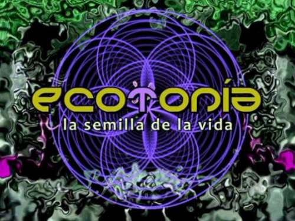
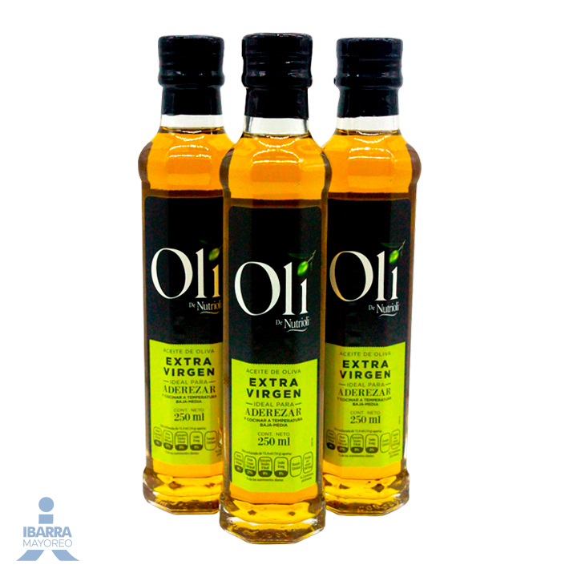

Cual es el Objetivo del Proyecto
El objetivo del Proyecto es incitar a las personas a hacer cosas que eviten producir cosas que afecten al los ecosistemas y a la sociedad con accienes como la preparacion de productos, el ahorro del agua y la preparacion de alimentos mediante cosas naturales para que no afecte tanto al mundo en el que vivimos.
objetivos de desarrollo sostenible

ODS es el acrónimo de "Objetivos de Desarrollo Sostenible", un conjunto de 17 objetivos adoptados por todos los Estados Miembros de las Naciones Unidas en 2015 como parte de la Agenda 2030 para el Desarrollo Sostenible. Estos objetivos están diseñados para abordar una amplia gama de desafíos globales, incluidos la pobreza, la desigualdad, el cambio climático, la degradación ambiental, la paz y la justicia.
Los Objetivos de Desarrollo Sostenible (ODS) son de vital importancia por varias razones, ya que abordan los problemas más apremiantes de la humanidad y del planeta.
La historia de los Objetivos de Desarrollo Sostenible (ODS) se remonta a varias décadas de esfuerzos internacionales para promover el desarrollo sostenible y abordar los desafíos globales. Desde su adopción, la implementación de los ODS ha sido una prioridad para muchos países, organizaciones internacionales, ONGs y el sector privado. Los progresos se monitorean a través de indicadores específicos, y se informan periódicamente en foros internacionales, como el Foro Político de Alto Nivel sobre el Desarrollo Sostenible. En septiembre de 2015, durante la Cumbre de Desarrollo Sostenible celebrada en la sede de la ONU en Nueva York, los 193 estados miembros de las Naciones Unidas adoptaron formalmente la Agenda 2030 para el Desarrollo Sostenible, que incluye los 17 Objetivos de Desarrollo Sostenible (ODS) y 169 metas asociadas.
Energia Renovables
Las energías renovables son fuentes de energía que se obtienen de recursos naturales que se regeneran de manera continua y sostenible, como la luz solar, el viento, la lluvia, las mareas, y el calor geotérmico. Estas fuentes son alternativas a los combustibles fósiles tradicionales y tienen un impacto ambiental significativamente menor.
Qué es una Ecotecnia
La enotecnia es la ciencia y el arte que se ocupa de la elaboración y conservación de vinos. Esta disciplina abarca todos los procesos desde la cosecha de la uva hasta el embotellado y almacenamiento del vino. Los enotecnólogos o enólogos son los especialistas en esta área, y su trabajo incluye la selección de las uvas, la fermentación, el envejecimiento, el embotellado y la evaluación del vino para asegurar su calidad y sabor.
"ventajas": Sostenibilidad Ambiental Reducción del Consumo de Recursos: Las ecotecnias promueven el uso eficiente y responsable de los recursos naturales, reduciendo la dependencia de recursos no renovables. Conservación de Ecosistemas: Ayudan a preservar los ecosistemas y la biodiversidad al minimizar la alteración y degradación de los hábitats naturales. Disminución de la Contaminación: Muchas ecotecnias reducen la emisión de contaminantes y residuos, mejorando la calidad del aire, agua y suelo. 2. Ahorro Económico Reducción de Costos: Al aprovechar recursos naturales como la energía solar, eólica o el agua de lluvia, se disminuyen los costos asociados a la compra de energía y agua. Durabilidad y Bajo Mantenimiento: Las ecotecnias suelen ser más duraderas y requieren menos mantenimiento que las tecnologías convencionales, lo que también reduce los gastos a largo plazo. 3. Autonomía y Resiliencia Independencia Energética: Las tecnologías como los paneles solares o los generadores eólicos permiten a las comunidades y hogares producir su propia energía, reduciendo la dependencia de las redes eléctricas tradicionales. Seguridad Hídrica: Sistemas de recolección y tratamiento de agua de lluvia proporcionan fuentes alternativas de agua potable y para otros usos, cruciales en áreas con escasez de agua. 4. Mejora de la Calidad de Vida Salud y Bienestar: Tecnologías como los sistemas de saneamiento ecológico y el uso de materiales no tóxicos en la construcción mejoran la salud y el bienestar de las comunidades. Acceso a Recursos Básicos: En áreas rurales o de bajos ingresos, las ecotecnias pueden proporcionar acceso a electricidad, agua limpia y saneamiento, mejorando significativamente la calidad de vida. 5. Educación y Conciencia Ambiental Promoción de la Sostenibilidad: La implementación de ecotecnias sensibiliza a las comunidades sobre la importancia del uso sostenible de los recursos y la protección del medio ambiente. Educación Práctica: Ofrecen oportunidades educativas en tecnologías sostenibles y prácticas ambientales, fomentando una cultura de sostenibilidad desde la base. 6. Desarrollo Comunitario Empoderamiento de Comunidades: Las ecotecnias pueden ser implementadas por las propias comunidades, promoviendo la autogestión y el empoderamiento. Creación de Empleo: La instalación y mantenimiento de ecotecnias puede generar empleo local, especialmente en áreas rurales. 7. Mitigación del Cambio Climático Reducción de Emisiones de Carbono: Muchas ecotecnias, como las energías renovables, contribuyen a la reducción de las emisiones de gases de efecto invernadero, ayudando a mitigar el cambio climático. Adaptación Climática: Sistemas como la recolección de agua de lluvia y la agricultura sostenible ayudan a las comunidades a adaptarse a los cambios climáticos, aumentando su resiliencia frente a fenómenos extremos.
"desventas": 1. Costos Iniciales Elevados Inversión Inicial: Muchas ecotecnias, como los paneles solares y los sistemas de energía eólica, requieren una inversión inicial considerable. Este costo puede ser prohibitivo para individuos y comunidades con recursos limitados. Retorno de Inversión a Largo Plazo: Aunque las ecotecnias pueden ahorrar dinero a largo plazo, el período de amortización puede ser largo, lo que desalienta a algunas personas a realizar la inversión. 2. Requieren Conocimiento Técnico Capacitación y Educación: La instalación y el mantenimiento de ecotecnias a menudo requieren conocimientos técnicos especializados. Sin la capacitación adecuada, puede ser difícil para las comunidades locales implementar y mantener estas tecnologías. Dependencia de Expertos: En algunas áreas, puede ser difícil encontrar expertos calificados para la instalación y el mantenimiento de ecotecnias, lo que puede aumentar los costos y complicar la implementación. 3. Factores Geográficos y Climáticos Limitaciones Geográficas: Algunas ecotecnias, como la energía solar y eólica, dependen de condiciones geográficas específicas para ser efectivas. Por ejemplo, los paneles solares son menos eficientes en áreas con poca luz solar, y los aerogeneradores requieren zonas con vientos constantes. Variabilidad Climática: Las ecotecnias pueden verse afectadas por variaciones climáticas. Por ejemplo, la generación de energía solar puede disminuir durante días nublados o lluviosos, y la recolección de agua de lluvia puede no ser suficiente en periodos de sequía. 4. Impacto Ambiental y Social Producción de Materiales: La fabricación de algunos componentes de ecotecnias, como paneles solares y baterías, puede tener un impacto ambiental significativo debido a la extracción de minerales y el uso de procesos industriales. Cambio en el Uso de la Tierra: La implementación de ciertas ecotecnias, como parques eólicos y proyectos de energía hidroeléctrica, puede requerir grandes extensiones de tierra y potencialmente desplazar comunidades o afectar ecosistemas locales. 5. Problemas de Almacenamiento y Continuidad Almacenamiento de Energía: Las fuentes de energía renovable, como la solar y la eólica, pueden ser intermitentes. Almacenar esta energía para uso continuo requiere baterías u otros sistemas de almacenamiento, que pueden ser costosos y tener su propia huella ambiental. Mantenimiento y Durabilidad: Algunas ecotecnias pueden requerir un mantenimiento regular y, en caso de fallas, las reparaciones pueden ser costosas y complicadas, especialmente en áreas remotas. 6. Aceptación y Cultura Resistencia al Cambio: La adopción de ecotecnias puede enfrentar resistencia cultural y social, ya que las personas pueden ser reacias a cambiar sus hábitos y confiar en nuevas tecnologías. Educación y Concienciación: La falta de conocimiento y comprensión sobre las ecotecnias puede limitar su aceptación y uso efectivo. Es crucial educar a las comunidades sobre los beneficios y el funcionamiento de estas tecnologías. 7. Regulaciones y Políticas Marco Regulatorio: La falta de políticas y regulaciones favorables puede dificultar la implementación de ecotecnias. En algunos casos, los subsidios y apoyos gubernamentales necesarios para hacer viables estas tecnologías pueden ser insuficientes o inexistentes. Incentivos Financieros: La ausencia de incentivos financieros, como créditos fiscales o subsidios, puede desincentivar a las personas y empresas a invertir en ecotecnias. 8. Escalabilidad Escalabilidad Limitada: Algunas ecotecnias pueden ser difíciles de escalar para satisfacer las necesidades de grandes poblaciones o industrias, lo que puede limitar su impacto global.
Jabon Casero
Hacer jabón casero es una actividad gratificante que te permite crear productos personalizados y naturales. Aquí tienes una guía básica para hacer jabón casero utilizando el método de saponificación en frío.
Materiales para Hacer Jabón Casero
- 500 ml de aceite de oliva 
- 200 g de gliserina solida
- Esencias aromáticas (opcional)
- Colorantes naturales (opcional)
- Molde para jabón
- Guantes y gafas de protección


Instrucciones para Hacer Jabón Casero
- Colócate los guantes y las gafas de protección.
- En un recipiente, mezcla la sosa cáustica con el agua destilada. Hazlo en un lugar bien ventilado y con cuidado, ya que la sosa cáustica es corrosiva.
- Deja enfriar la mezcla hasta que alcance aproximadamente 40°C.
- En otro recipiente, calienta el aceite de oliva a unos 40°C.
- Vierte lentamente la mezcla de sosa en el aceite, removiendo constantemente.
- Sigue removiendo hasta que la mezcla espese y alcance la consistencia de una traza (similar a un pudín ligero).
- Agrega las esencias aromáticas y los colorantes si deseas.
- Vierte la mezcla en el molde para jabón y cubre con un paño.
- Deja reposar el jabón en un lugar seco y fresco durante 24-48 horas.
- Desmolda el jabón y corta en barras. Deja curar las barras durante 4-6 semanas antes de usarlas.
integrantes del equipo
Israel Hernandez Santana Saul Samaniego Martinez Claudia Michell Reyes Mendiola Juan Sebastian Barrera Hernandez